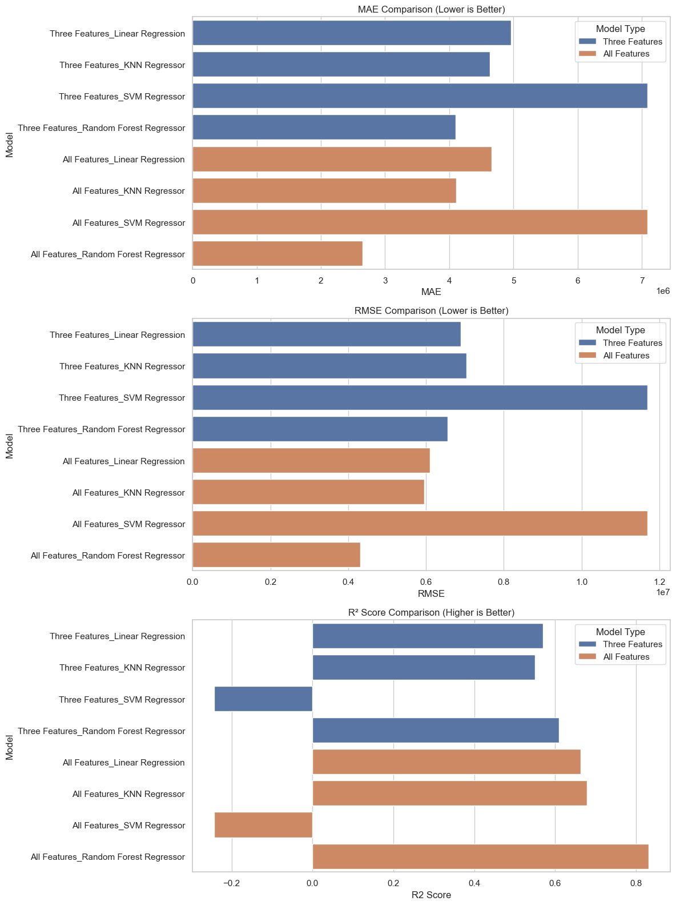
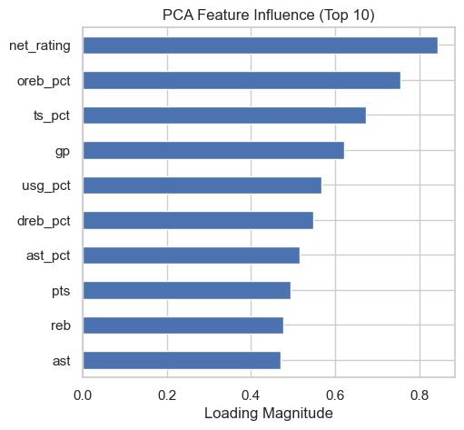
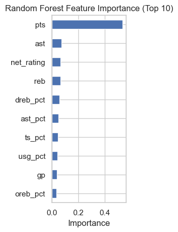
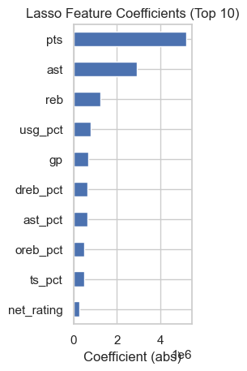
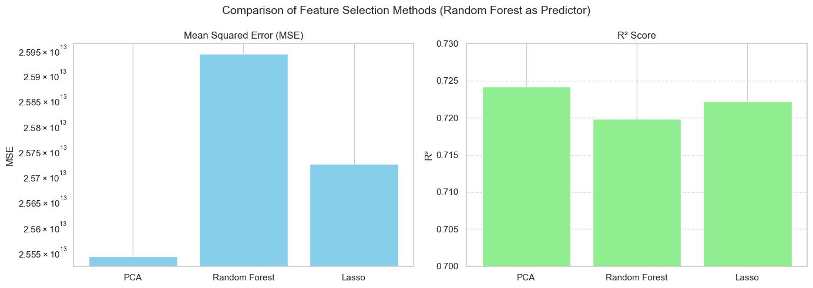

import pandas as pd
import numpy as np
import seaborn as sns
import matplotlib.pyplot as plt
from sklearn.model_selection import train_test_split
from sklearn.ensemble import RandomForestRegressor
from sklearn.metrics import mean_absolute_error, mean_squared_error, r2_score
from sklearn.linear_model import LinearRegression, Ridge
from sklearn.neighbors import KNeighborsRegressor
from sklearn.ensemble import RandomForestRegressor
from sklearn.svm import SVRfile_list=["../../data/merged_data_pos-2019.csv","../../data/merged_data_pos-2020.csv",
"../../data/merged_data_pos-2021.csv","../../data/merged_data_pos-2022.csv"]
df = combined = pd.concat([pd.read_csv(file)for file in file_list],ignore_index=True)
#df = pd.read_csv("../data/merged_data_pos-2019.csv")
df.head(3)| player_name | ...1 | team_abbreviation | age | player_height | player_weight | college | country | draft_year | draft_round | ... | dreb_pct | usg_pct | ts_pct | ast_pct | season.x | Salary | season | Pos | season_x | season_y | |
|---|---|---|---|---|---|---|---|---|---|---|---|---|---|---|---|---|---|---|---|---|---|
| 0 | Aaron Gordon | 10851 | ORL | 24 | 203.20 | 106.59412 | Arizona | USA | NaN | 1 | ... | 0.181 | 0.205 | 0.516 | 0.165 | 2019-20 | 19863636 | 2019.0 | PF | NaN | NaN |
| 1 | Aaron Holiday | 10850 | IND | 23 | 182.88 | 83.91452 | UCLA | USA | NaN | 1 | ... | 0.077 | 0.182 | 0.521 | 0.188 | 2019-20 | 2239200 | 2019.0 | PG | NaN | NaN |
| 2 | Abdel Nader | 10849 | OKC | 26 | 195.58 | 102.05820 | Iowa State | Egypt | NaN | 2 | ... | 0.095 | 0.164 | 0.591 | 0.068 | 2019-20 | 1618520 | 2019.0 | SF | NaN | NaN |
3 rows × 27 columns
old_df = df[['player_name','pts','reb','ast','Salary']]
new_df = df[['player_name','age','player_weight','player_weight','pts','reb','ast',
'net_rating','oreb_pct','dreb_pct','usg_pct','ts_pct','ast_pct','Salary']]
print(old_df)
print(new_df) player_name pts reb ast Salary
0 Aaron Gordon 14.4 7.7 3.7 19863636
1 Aaron Holiday 9.5 2.4 3.4 2239200
2 Abdel Nader 6.3 1.8 0.7 1618520
3 Al Horford 11.9 6.8 4.0 28000000
4 Al-Farouq Aminu 4.3 4.8 1.2 9258000
... ... ... ... ... ...
1826 Yuta Watanabe 5.6 2.4 0.8 1968175
1827 Zach Collins 11.6 6.4 2.9 7350000
1828 Zach LaVine 24.8 4.5 4.2 37096500
1829 Zeke Nnaji 5.2 2.6 0.3 2617800
1830 Ziaire Williams 5.7 2.1 0.9 4591680
[1831 rows x 5 columns]
player_name age player_weight player_weight pts reb ast \
0 Aaron Gordon 24 106.59412 106.59412 14.4 7.7 3.7
1 Aaron Holiday 23 83.91452 83.91452 9.5 2.4 3.4
2 Abdel Nader 26 102.05820 102.05820 6.3 1.8 0.7
3 Al Horford 34 108.86208 108.86208 11.9 6.8 4.0
4 Al-Farouq Aminu 29 99.79024 99.79024 4.3 4.8 1.2
... ... ... ... ... ... ... ...
1826 Yuta Watanabe 28 97.52228 97.52228 5.6 2.4 0.8
1827 Zach Collins 25 113.39800 113.39800 11.6 6.4 2.9
1828 Zach LaVine 28 90.71840 90.71840 24.8 4.5 4.2
1829 Zeke Nnaji 22 108.86208 108.86208 5.2 2.6 0.3
1830 Ziaire Williams 21 83.91452 83.91452 5.7 2.1 0.9
net_rating oreb_pct dreb_pct usg_pct ts_pct ast_pct Salary
0 -1.2 0.050 0.181 0.205 0.516 0.165 19863636
1 2.2 0.013 0.077 0.182 0.521 0.188 2239200
2 -4.2 0.016 0.095 0.164 0.591 0.068 1618520
3 3.3 0.051 0.171 0.173 0.536 0.187 28000000
4 -5.4 0.053 0.158 0.127 0.395 0.088 9258000
... ... ... ... ... ... ... ...
1826 -0.6 0.034 0.117 0.127 0.637 0.071 1968175
1827 -7.5 0.076 0.190 0.209 0.599 0.180 7350000
1828 0.3 0.016 0.108 0.278 0.607 0.187 37096500
1829 -5.9 0.087 0.099 0.149 0.620 0.040 2617800
1830 -5.2 0.028 0.105 0.178 0.511 0.086 4591680
[1831 rows x 14 columns]old_df.isnull().sum().sort_values(ascending=False)
new_df.isnull().sum().sort_values(ascending=False)player_name 0
age 0
player_weight 0
player_weight 0
pts 0
reb 0
ast 0
net_rating 0
oreb_pct 0
dreb_pct 0
usg_pct 0
ts_pct 0
ast_pct 0
Salary 0
dtype: int64x_old = old_df.drop(columns=['Salary','player_name'])
y_old = new_df['Salary']
x_train_old,x_test_old,y_train_old,y_test_old = train_test_split(x_old,y_old,test_size=0.2,random_state=123)
x_new = new_df.drop(columns=['Salary',"player_name"])
y_new = new_df['Salary']
x_train_new, x_test_new, y_train_new, y_test_new = train_test_split(x_new, y_new, test_size=0.2, random_state=123)# models to train
models = {
'Linear Regression': LinearRegression(),
'KNN Regressor': KNeighborsRegressor(n_neighbors=5),
'SVM Regressor': SVR(C=1.0, epsilon=0.2),
'Random Forest Regressor': RandomForestRegressor(n_estimators=100, random_state=42)
}
# the function to train and evaluate models
def evaluate_models(X_train, X_test, y_train, y_test, tag=''):
results = {}
for name, model in models.items():
model.fit(X_train, y_train)
y_pred = model.predict(X_test)
mae = mean_absolute_error(y_test, y_pred)
rmse = np.sqrt(mean_squared_error(y_test, y_pred))
r2 = r2_score(y_test, y_pred)
results[f'{tag}_{name}'] = {
'MAE': mae,
'RMSE': rmse,
'R2 Score': r2
}
return results
results_old = evaluate_models(x_train_old, x_test_old, y_train_old, y_test_old, tag='Three Features')
#combine all results together
all_results_old = {**results_old}
results_df_old = pd.DataFrame(all_results_old).T
print("\nComparison of models without feature enrichment:")
print(results_df_old)
results_new = evaluate_models(x_train_new, x_test_new, y_train_new, y_test_new, tag='All Features')
all_results_new = {**results_new}
results_df_new = pd.DataFrame(all_results_new).T
print("\nComparison of models with feature enrichment")
print(results_df_new)
Comparison of models without feature enrichment:
MAE RMSE R2 Score
Three Features_Linear Regression 4.959101e+06 6.887345e+06 0.569023
Three Features_KNN Regressor 4.637137e+06 7.038563e+06 0.549890
Three Features_SVM Regressor 7.089396e+06 1.169547e+07 -0.242758
Three Features_Random Forest Regressor 4.100074e+06 6.562109e+06 0.608765
Comparison of models with feature enrichment
MAE RMSE R2 Score
All Features_Linear Regression 4.660642e+06 6.097851e+06 0.662165
All Features_KNN Regressor 4.111459e+06 5.947605e+06 0.678608
All Features_SVM Regressor 7.089481e+06 1.169553e+07 -0.242771
All Features_Random Forest Regressor 2.652626e+06 4.316311e+06 0.830731results_df_old["Model Type"] = "Three Features"
results_df_new["Model Type"] = "All Features"
combined_df = pd.concat([results_df_old, results_df_new])
combined_df.reset_index(inplace=True)
combined_df.rename(columns={"index": "Model"}, inplace=True)
sns.set(style="whitegrid")
fig, axes = plt.subplots(3, 1, figsize=(12, 16))
# MAE plot
sns.barplot(data=combined_df, x="MAE", y="Model", hue="Model Type", ax=axes[0])
axes[0].set_title("MAE Comparison (Lower is Better)")
# RMSE plot
sns.barplot(data=combined_df, x="RMSE", y="Model", hue="Model Type", ax=axes[1])
axes[1].set_title("RMSE Comparison (Lower is Better)")
# R² plot
sns.barplot(data=combined_df, x="R2 Score", y="Model", hue="Model Type", ax=axes[2])
axes[2].set_title("R² Score Comparison (Higher is Better)")
plt.tight_layout()
plt.show()
df_cleaned = df.dropna(axis=1)
df_cleaned| player_name | ...1 | team_abbreviation | age | player_height | player_weight | country | draft_round | draft_number | gp | ... | reb | ast | net_rating | oreb_pct | dreb_pct | usg_pct | ts_pct | ast_pct | Salary | Pos | |
|---|---|---|---|---|---|---|---|---|---|---|---|---|---|---|---|---|---|---|---|---|---|
| 0 | Aaron Gordon | 10851 | ORL | 24 | 203.20 | 106.59412 | USA | 1 | 4 | 62 | ... | 7.7 | 3.7 | -1.2 | 0.050 | 0.181 | 0.205 | 0.516 | 0.165 | 19863636 | PF |
| 1 | Aaron Holiday | 10850 | IND | 23 | 182.88 | 83.91452 | USA | 1 | 23 | 66 | ... | 2.4 | 3.4 | 2.2 | 0.013 | 0.077 | 0.182 | 0.521 | 0.188 | 2239200 | PG |
| 2 | Abdel Nader | 10849 | OKC | 26 | 195.58 | 102.05820 | Egypt | 2 | 58 | 55 | ... | 1.8 | 0.7 | -4.2 | 0.016 | 0.095 | 0.164 | 0.591 | 0.068 | 1618520 | SF |
| 3 | Al Horford | 10846 | PHI | 34 | 205.74 | 108.86208 | Dominican Republic | 1 | 3 | 67 | ... | 6.8 | 4.0 | 3.3 | 0.051 | 0.171 | 0.173 | 0.536 | 0.187 | 28000000 | C |
| 4 | Al-Farouq Aminu | 10853 | ORL | 29 | 203.20 | 99.79024 | USA | 1 | 8 | 18 | ... | 4.8 | 1.2 | -5.4 | 0.053 | 0.158 | 0.127 | 0.395 | 0.088 | 9258000 | PF |
| ... | ... | ... | ... | ... | ... | ... | ... | ... | ... | ... | ... | ... | ... | ... | ... | ... | ... | ... | ... | ... | ... |
| 1826 | Yuta Watanabe | 12415 | BKN | 28 | 203.20 | 97.52228 | Japan | Undrafted | Undrafted | 58 | ... | 2.4 | 0.8 | -0.6 | 0.034 | 0.117 | 0.127 | 0.637 | 0.071 | 1968175 | SF |
| 1827 | Zach Collins | 12414 | SAS | 25 | 210.82 | 113.39800 | USA | 1 | 10 | 63 | ... | 6.4 | 2.9 | -7.5 | 0.076 | 0.190 | 0.209 | 0.599 | 0.180 | 7350000 | C |
| 1828 | Zach LaVine | 12413 | CHI | 28 | 195.58 | 90.71840 | USA | 1 | 13 | 77 | ... | 4.5 | 4.2 | 0.3 | 0.016 | 0.108 | 0.278 | 0.607 | 0.187 | 37096500 | SG |
| 1829 | Zeke Nnaji | 12412 | DEN | 22 | 205.74 | 108.86208 | USA | 1 | 22 | 53 | ... | 2.6 | 0.3 | -5.9 | 0.087 | 0.099 | 0.149 | 0.620 | 0.040 | 2617800 | PF |
| 1830 | Ziaire Williams | 12411 | MEM | 21 | 205.74 | 83.91452 | USA | 1 | 10 | 37 | ... | 2.1 | 0.9 | -5.2 | 0.028 | 0.105 | 0.178 | 0.511 | 0.086 | 4591680 | SF |
1831 rows × 21 columns
import pandas as pd
import numpy as np
from sklearn.preprocessing import StandardScaler
from sklearn.decomposition import PCA
from sklearn.ensemble import RandomForestRegressor
from sklearn.linear_model import LassoCV
import matplotlib.pyplot as pltdf_cleaned = df_cleaned.drop(df_cleaned.columns[:2].tolist() + ['country', 'draft_round', 'draft_number'], axis=1)
# 只保留数值型特征用于建模
X = df_cleaned.drop(columns=['Salary']).select_dtypes(include='number')
y = df_cleaned['Salary']
# 标准化处理（PCA 和 Lasso 需要）
scaler = StandardScaler()
X_scaled = scaler.fit_transform(X)# ========== PCA ==========
pca = PCA(n_components=0.95)
X_pca = pca.fit_transform(X_scaled)
pca_components = pd.DataFrame(np.abs(pca.components_), columns=X.columns)
pca_importance = pca_components.max().sort_values(ascending=False)# ========== Random Forest ==========
rf = RandomForestRegressor(random_state=42)
rf.fit(X, y)
rf_importance = pd.Series(rf.feature_importances_, index=X.columns).sort_values(ascending=False)# ========== Lasso ==========
lasso = LassoCV(cv=5, random_state=42)
lasso.fit(X_scaled, y)
lasso_importance = pd.Series(np.abs(lasso.coef_), index=X.columns)
lasso_importance = lasso_importance[lasso_importance > 0].sort_values(ascending=False)plt.figure(figsize=(18, 5))
plt.subplot(1, 3, 1)
pca_importance.head(10).plot(kind='barh')
plt.title('PCA Feature Influence (Top 10)')
plt.xlabel('Loading Magnitude')
plt.gca().invert_yaxis()
plt.subplot(1, 3, 2)
rf_importance.head(10).plot(kind='barh')
plt.title('Random Forest Feature Importance (Top 10)')
plt.xlabel('Importance')
plt.gca().invert_yaxis()
plt.subplot(1, 3, 3)
lasso_importance.head(10).plot(kind='barh')
plt.title('Lasso Feature Coefficients (Top 10)')
plt.xlabel('Coefficient (abs)')
plt.gca().invert_yaxis()
from sklearn.ensemble import RandomForestRegressor
from sklearn.model_selection import train_test_split
from sklearn.metrics import mean_squared_error, r2_score
top_pca_features = pca_importance.head(10).index.tolist()
# Random Forest：取累计重要性达 95% 的特征
cumulative_importance = rf_importance.cumsum()
selected_rf_features = cumulative_importance[cumulative_importance <= 0.95].index.tolist()
# Lasso：直接从非零系数中提取出来的特征（你已做好）
selected_lasso_features = lasso_importance.index.tolist()def evaluate_rf(feature_list, X, y):
X_subset = X[feature_list]
X_train, X_test, y_train, y_test = train_test_split(X_subset, y, test_size=0.2, random_state=42)
model = RandomForestRegressor(random_state=42)
model.fit(X_train, y_train)
y_pred = model.predict(X_test)
mse = mean_squared_error(y_test, y_pred)
r2 = r2_score(y_test, y_pred)
return {'mse': mse, 'r2': r2}
# 避免特征不在 X 里（保险写法）
top_pca_features = [f for f in top_pca_features if f in X.columns]
selected_rf_features = [f for f in selected_rf_features if f in X.columns]
selected_lasso_features = [f for f in selected_lasso_features if f in X.columns]
results = {
'PCA': evaluate_rf(top_pca_features, X, y),
'Random Forest': evaluate_rf(selected_rf_features, X, y),
'Lasso': evaluate_rf(selected_lasso_features, X, y)
}
# 打印结果表格
import pandas as pd
results_df = pd.DataFrame(results).T
print(results_df) mse r2
PCA 2.554246e+13 0.724187
Random Forest 2.594255e+13 0.719867
Lasso 2.572417e+13 0.722225# ========== 可视化对比 ==========
fig, axes = plt.subplots(1, 2, figsize=(14, 5))
# MSE 图（对数刻度）
axes[0].bar(results_df.index, results_df['mse'], color='skyblue')
axes[0].set_title("Mean Squared Error (MSE)")
axes[0].set_ylabel("MSE")
axes[0].set_yscale('log')
axes[0].grid(axis='y', linestyle='--', alpha=0.7)
# R² 图
axes[1].bar(results_df.index, results_df['r2'], color='lightgreen')
axes[1].set_title("R² Score")
axes[1].set_ylabel("R²")
axes[1].set_ylim(0.7, 0.73)
axes[1].grid(axis='y', linestyle='--', alpha=0.7)
plt.suptitle("Comparison of Feature Selection Methods (Random Forest as Predictor)", fontsize=14)
plt.tight_layout()
plt.show()